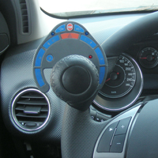
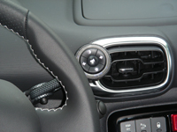

Panele sterujące wg modeli
Panel - model 094-FV
The Guidosimplex 1094FV hand control uses infrared technology to manage your vehicle’s secondary controls by interfacing directly with the vehicle’s electrical system. The illuminated key pad rotates...
Panel - model 1094-FR
This remotely controlled, steering wheel mounted device allows the driver to quickly adjust vehicle functions and settings. The central command keyboard can be mounted for either right or left

Panel - model 898B
Fixed Secondary controls operated from a static control stick behind the steering wheel. The D898B offers another flexible way of operating the Horn, Indicators and...